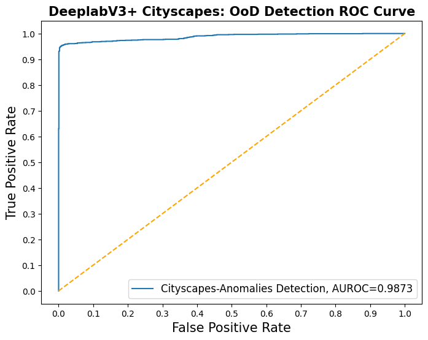

CEA-LSEA: Out-of-Distribution Detection using DNN Latent Space Uncertainty Guide
Package usage overview
Steps for using the package:
Load you Dataloader Pytorch-Lightning Module
Load your trained DNN PyTorch-Lightning Module
Add Hook to DNN Module for MC samples extraction
Get Monte-Carlo (MC) samples for In-Distribution (InD) samples dataloader, and Out-of-Distribution (OoD) samples dataloader
Get Entropy from InD and OoD MC samples
Build OoD Detection dataset (with InD and OoD samples)
Build OoD data-driven Detector (classifier)
Show OoD performance results
General Python Package Imports
import torch
import pytorch_lightning as pl
from pytorch_lightning.callbacks import ModelCheckpoint
from torchvision import transforms as transform_lib
from pytorch_lightning.callbacks import TQDMProgressBar
from torch.utils.data import Dataset
from torch.utils.data import DataLoader
import numpy as np
from dropblock import DropBlock2D
Data Imports
from dataset_utils.cityscapes import Cityscapes
from dataset_utils.cityscapes import CityscapesDataModule
from dataset_utils.woodscape import WoodScapeDataset
from dataset_utils.woodscape import WoodScapeDataModule
DNN Model Imports
from probabilistic_unet.probabilistic_unet_module import ProbabilisticUnetPriorMcdModule
from deeplab_v3p import DeepLabV3PlusModule
from dropblock import DropBlock2D
Import LSEA-OoD Detection Package
from ls_ood_detect_cea.uncertainty_estimation import Hook
from ls_ood_detect_cea.uncertainty_estimation import deeplabv3p_apply_dropout
from ls_ood_detect_cea.uncertainty_estimation import deeplabv3p_get_ls_mcd_samples
from ls_ood_detect_cea.uncertainty_estimation import get_dl_h_z
from ls_ood_detect_cea.ood_detection_dataset import build_ood_detection_ds
from ls_ood_detect_cea.dimensionality_reduction import plot_samples_pacmap
from ls_ood_detect_cea.detectors import KDEClassifier
from ls_ood_detect_cea.metrics import get_ood_detector_results, plot_roc_ood_detector
Load Data Module
Example for Cityscapes dataset
dataset_path = '/your/path/to/dataset/CityScapes'
batch_size = 1
cs_dm_normal_dlv3p = CityscapesDataModule(data_dir=dataset_path,
batch_size=batch_size,
target_type='semantic',
img_size=(256, 512),
num_workers=10,
drop_last=True,
default_transforms=True, # Here this should be True!
default_img_mask_transforms=False) # And here this should be False! (Disable anomalies)
cs_dm_anomal_dlv3p = CityscapesDataModule(data_dir=dataset_path,
batch_size=batch_size,
target_type='semantic',
img_size=(256, 512),
num_workers=10,
drop_last=True,
default_transforms=False, # Here this should be False!
default_img_mask_transforms=True) # And here this should be True! (Enable Anomalies)
Get datakiaders for In-Distribution (InD) and Out-of-Distribution (OoD) data.
cs_dlv3p_train_loader = cs_dm_normal_dlv3p.train_dataloader()
cs_dlv3p_valid_loader = cs_dm_normal_dlv3p.val_dataloader()
cs_dlv3p_test_loader = cs_dm_normal_dlv3p.test_dataloader()
cs_dlv3p_anomaly_valid_loader = cs_dm_anomal_dlv3p.anomaly_val_dataloader()
cs_dlv3p_anomaly_test_loader = cs_dm_anomal_dlv3p.anomaly_test_dataloader()
Load your trained DNN Module
cs_dlv3p_path = "/path/to/your/DNN/model/lightning_logs/version_x/checkpoints/epoch=y-step=z.ckpt"
cs_dlv3p_model = DeepLabV3PlusModule.load_from_checkpoint(checkpoint_path=cs_dlv3p_path)
Place Hook at the output of Deeplabv3+ DropBlock2D layer
cs_dlv3p_hook_dropblock2d_layer = Hook(cs_dlv3p_model.deeplab_v3plus_model.drop_block1)
Get Monte-Carlo Samples
device = torch.device('cuda' if torch.cuda.is_available() else 'cpu')
print(device)
cuda
cs_dlv3p_model.deeplab_v3plus_model.to(device);
cs_dlv3p_model.deeplab_v3plus_model.eval();
cs_dlv3p_model.deeplab_v3plus_model.apply(deeplabv3p_apply_dropout); # enable dropout
mc_samples=10 # in this example we use 10 Monte-Carlo samples
cs_dlv3p_valid_10mc_samples = deeplabv3p_get_ls_mcd_samples(cs_dlv3p_model, cs_dlv3p_valid_loader, mc_samples, cs_dlv3p_hook_dropblock2d_layer)
cs_dlv3p_test_10mc_samples = deeplabv3p_get_ls_mcd_samples(cs_dlv3p_model, cs_dlv3p_test_loader, mc_samples, cs_dlv3p_hook_dropblock2d_layer)
cs_dlv3p_valid_anomaly_10mc_samples = deeplabv3p_get_ls_mcd_samples(cs_dlv3p_model, cs_dlv3p_anomaly_valid_loader, mc_samples, cs_dlv3p_hook_dropblock2d_layer)
cs_dlv3p_test_anomaly_10mc_samples = deeplabv3p_get_ls_mcd_samples(cs_dlv3p_model, cs_dlv3p_anomaly_test_loader, mc_samples, cs_dlv3p_hook_dropblock2d_layer)
Get Latent Representation Entropy $\mathcal{H}_{z}$
cs_dlv3p_h_mvn_valid_samples_np, cs_dlv3p_h_z_valid_samples_np = get_dl_h_z(cs_dlv3p_valid_10mc_samples,
mcd_samples_nro=10)
cs_dlv3p_h_mvn_test_samples_np, cs_dlv3p_h_z_test_samples_np = get_dl_h_z(cs_dlv3p_test_10mc_samples,
mcd_samples_nro=10)
cs_dlv3p_h_mvn_valid_anomaly_samples_np, ws_dlv3p_h_z_valid_anomaly_samples_np = get_dl_h_z(cs_dlv3p_valid_anomaly_10mc_samples,
mcd_samples_nro=10)
cs_dlv3p_h_mvn_test_anomaly_samples_np, ws_dlv3p_h_z_test_anomaly_samples_np = get_dl_h_z(cs_dlv3p_test_anomaly_10mc_samples,
mcd_samples_nro=10)
Build Entropy-based OoD Detection Dataset
Show latent representation entropy $\mathcal{H}_{z}$ dataset projection in 2D:
plot_samples_pacmap(ws_dlv3p_h_z_valid_samples_np,
ws_dlv3p_h_z_valid_anomaly_samples_np,
neighbors=28,
title="DeeplabV3+ Cityscapes: $\hat{H}_{\phi}(z_i \mid x)$")

Build dataset for OoD detection using InD and OoD (anomalies) samples.
h_z_train_ds, labels_h_z_train_ds, h_z_test_ds, labels_h_z_test_ds = build_ood_detection_ds(cs_dlv3p_h_z_valid_samples_np,
cs_dlv3p_h_z_valid_anomaly_samples_np,
cs_dlv3p_h_z_test_samples_np,
cs_dlv3p_h_z_test_anomaly_samples_np)
Build OoD Detector (Classifier)
h_z_odd_monitor = KDEClassifier(bandwidth=0.8)
h_z_odd_monitor.fit(h_z_train_ds, labels_h_z_train_ds)
h_z_odd_monitor_results = get_ood_detector_results("cs OoD monitor",
h_z_odd_monitor,
h_z_test_ds,
labels_h_z_test_ds)
h_z_odd_monitor_results
| fpr | tpr | auc | acc | mcc | f1 | fpr@95 | |
|---|---|---|---|---|---|---|---|
| cs OoD monitor | [tensor(0.), tensor(0.), tensor(0.), tensor(0.... | [tensor(0.), tensor(0.0007), tensor(0.0013), t... | tensor(0.9873) | tensor(0.9639) | tensor(0.9302) | tensor(0.9626) | tensor(0.0072) |
plot_roc_ood_detector(h_z_odd_monitor_results,
"Cityscapes-Anomalies Detection",
"DeeplabV3+ Cityscapes: OoD Detection ROC Curve")
